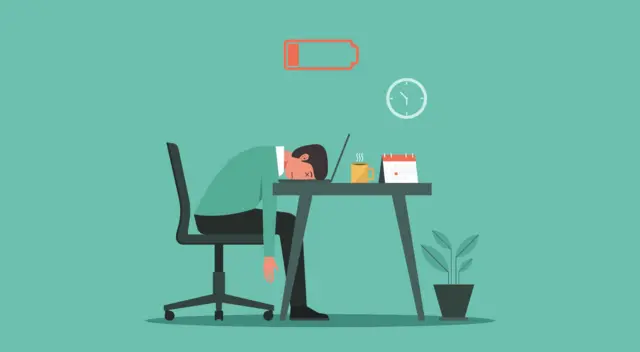

Projeto de Extenção
Jornadas excessivas de trabalho
Jornada de Trabalho Exaustiva: O que é e por que é um problema?
A jornada de trabalho exaustiva é quando um trabalhador é submetido a um número excessivo de horas de trabalho, ultrapassando os limites legais. Essa prática, além de ser ilegal na maioria dos casos, causa sérios danos à saúde física e mental do profissional, afeta a sua vida pessoal e, no final das contas, diminui a sua produtividade e qualidade de vida.

O que a lei diz sobre a jornada de trabalho?
A legislação brasileira, especialmente a CLT (Consolidação das Leis do Trabalho), estabelece regras claras para proteger o trabalhador da sobrecarga:
Jornada normal:a jornada de trabalho padrão é de 8 horas por dia e 44 horas por semana. Horas extras: é permitido fazer até 2 horas extras por dia, mas o empregador deve pagar por essas horas com um adicional de, no mínimo, 50% sobre o valor da hora normal em dias úteis e 100% em domingos e feriados.
Intervalos:é obrigatório um intervalo para descanso e refeição. Para jornadas acima de 6 horas, o intervalo deve ser de, no mínimo, 1 hora.
Descanso entre jornadas:o trabalhador tem o direito a um descanso de 11 horas consecutivas entre uma jornada de trabalho e outra.
Descanso semanal:todo trabalhador tem direito a 24 horas de descanso semanal remunerado, preferencialmente aos domingos.
Os perigos da jornada exaustiva
Trabalhar mais horas do que o seu corpo e mente aguentam pode levar a:
Esgotamento (Burnout): um estado de exaustão física e mental causado por estresse crônico no trabalho.
Problemas de saúde:o excesso de trabalho pode causar doenças cardiovasculares, diabetes, dores crônicas, e impacta negativamente a sua saúde mental, podendo levar a quadros de ansiedade e depressão.
Descanso entre jornadas:o trabalhador tem o direito a um descanso de 11 horas consecutivas entre uma jornada de trabalho e outra.
Aumento de acidentes: a falta de descanso diminui a sua atenção e reflexos, aumentando o risco de acidentes no ambiente de trabalho e no trajeto.
Prejuízos na vida pessoal:a falta de tempo livre compromete a sua vida familiar e social, impede a prática de atividades físicas, hobbies e o descanso necessário para manter um equilíbrio saudável.
Se você está trabalhando em uma jornada excessiva sem a devida remuneração e descanso, lembre-se de que isso é uma violação dos seus direitos. Você pode procurar o seu sindicato, o Ministério do Trabalho e Empregoou um advogado trabalhista para se informar e tomar as medidas necessárias para garantir que a lei seja cumprida.
Universidade Tiradente - UNIT